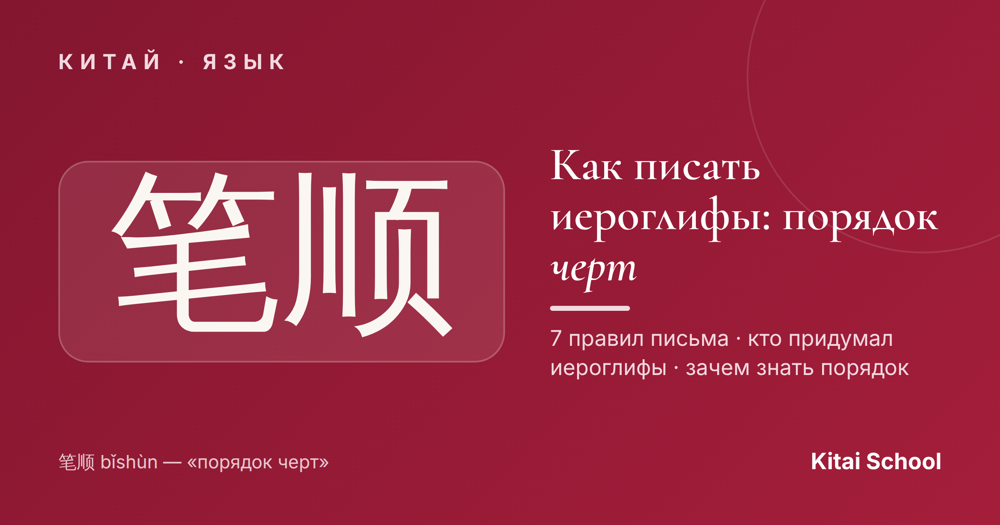
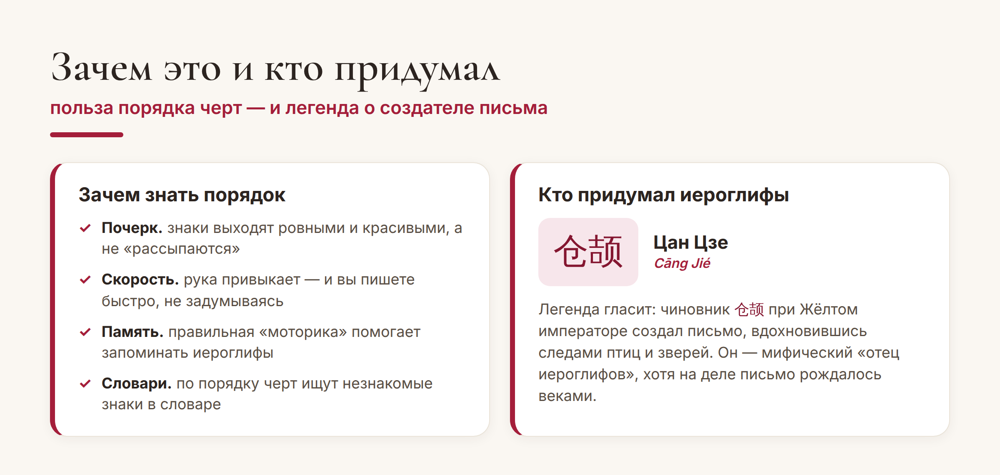
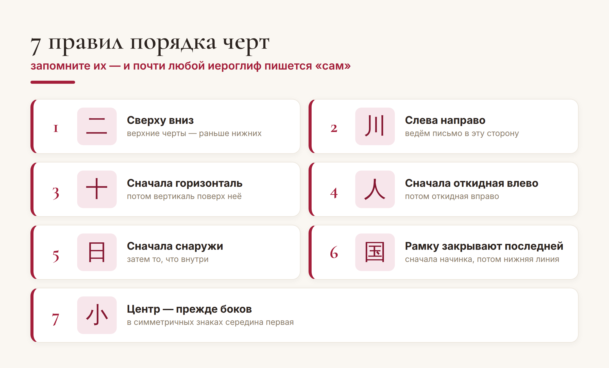

Китай · язык

Иероглиф кажется хаосом из палочек, который каждый рисует как хочет. На самом деле у любого знака есть строгий порядок черт — 笔顺 (bǐshùn). Выучите несколько простых правил — и иероглифы начнут получаться ровными, красивыми и запоминаться сами.
Разберём, зачем вообще нужен порядок черт, соберём главные правила и заодно узнаем, кто, по легенде, придумал китайскую письменность.
Первый вопрос новичка: «Какая разница, в каком порядке рисовать, если результат один?» Разница есть, и большая. Правильный порядок — это не занудство, а то, что реально облегчает жизнь.

Коротко: правильный порядок делает почерк аккуратным, ускоряет письмо, помогает запоминать знаки (рука подключает моторную память) и позволяет искать незнакомые иероглифы в словарях. Освоить его один раз — и это работает на вас всю дальнейшую учёбу.
Хорошая новость: правил немного, и они логичные. Вот основные — на них держится письмо почти любого иероглифа:

Общая идея — «сверху вниз, слева направо». Всё остальное лишь уточняет её для разных случаев: горизонталь раньше пересекающей вертикали (十), сначала то, что снаружи, а потом внутри (日), а «рамку» закрывают в самом конце — сначала пишут начинку, а нижнюю черту квадрата дорисовывают последней (国).
Совет. Не заучивайте правила как список — просто прописывайте иероглифы с самого начала правильно. Есть удобные приложения с анимацией порядка черт: посмотрели, как «рисуется» знак, и повторили. Через пару недель рука будет делать это сама.
Раз уж мы пишем эти знаки — интересно, откуда они взялись. По китайской легенде, письмо создал 仓颉 (Cāng Jié), Цан Цзе — придворный историограф мифического Жёлтого императора. Говорят, он наблюдал за следами птиц и зверей, за узорами природы — и придумал, как «зарисовывать» вещи и понятия. За это его почитают как «отца иероглифов».
На самом деле, конечно, письменность не изобрёл один человек. Самые древние китайские знаки — гадательные надписи на костях и панцирях черепах (甲骨文, цзягувэнь) — старше трёх тысяч лет, и иероглифы складывались постепенно, многими поколениями. Но красивая легенда о Цан Цзе живёт до сих пор.
Вот и всё, что нужно для старта: понять, зачем нужен порядок черт, запомнить пару правил — и просто начать писать. Иероглифы, которые ещё вчера пугали, очень скоро станут привычными и даже любимыми.
Красивых вам иероглифов! 熟能生巧。